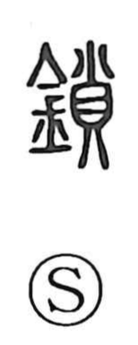

鎖

Kun: kusari | On: sa
chain ・ lock ・ latch ・ to close ・ to shut
Explanation
鎖 is a picto‑phonetic character: the metal element 金 indicates the material, while 貨 functions as the phonetic, giving the on‑reading sa. 貨 itself evokes small shells strung together, an image of linked pieces like a chain. With the metal determinative, the character names a long, thread‑like length of interlinked metal—hence “chain.” Such a chain also served as a door fastener, yielding the sense “latch,” and by extension the verb meaning “to close, to shut.”